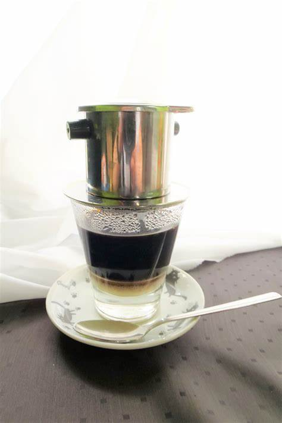

Vietnam Drip
Dari biji kopi yang berasal dari lampung, Menggunakan jenis Robusta yang diracik sedemikian rupa dan menghasilkan Vietnam Drip Terbaik di Panggon Paseduluran

Favorite
16.00 - 2.00 WIB
Dari Biji Kopi Pilihan
Sabtu - Minggu tetap buka